Open Source Spatial Reactomics (OSSpRe) Workflow
Introduction
- Overview of Ion Mobility Spectrometry (IMS)
- Overview of Mass Spectrometry (MS)
- Overview of Mass Spectrometry Imaging (MSI)
- Importance of timsTOF MSI in analyzing complex biological samples
- Current limitations
Overview of Ion Mobility Spectrometry (IMS)
Ion Mobility Spectrometry (IMS) is a technique used to separate ions based on their shape, size, and charge.
Provides detailed information about the physical and structural properties of ions.

Jeff Dahl, CC BY-SA 3.0, via Wikimedia Commons

What is Mass Spectrometry?
- Mass Spectrometry (MS) is an analytical technique used to measure the mass-to-charge ratio of ions.
- It provides information about the molecular weight and structure of compounds.
- Commonly used in chemistry, biology, and environmental science for:
- Characterizing molecules
- Determining molecular weights
- Analyzing complex mixtures
The Components of Mass Spectrometry
- Ionization Source: Converts sample molecules into ions.
- Mass Analyzer: Separates ions according to their mass-to-charge ratio.
- Detector: Captures the separated ions and generates a signal proportional to their abundance.
- Data Analysis Software: Processes and interprets the detected signals to provide quantitative and qualitative information.
What is TIMS-TOF?
- Ionization: Sample ions are generated using methods like MALDI (Matrix-Assisted Laser Desorption/Ionization).
- Ion Mobility Separation:
- Ions are introduced into the TIMS device where they experience a travelling wave field.
- Size and shape of ions affect their mobility through the gas, separating them based on their drift times.
- Time-of-Flight Analysis:
- After mobility separation, ions are accelerated into a vacuum, and their time to reach the detector is measured.
What is Mass Spectrometry Imaging (MSI)?
- Mass Spectrometry Imaging (MSI) combines mass spectrometry with imaging techniques.
- It allows for spatial localization of chemical information within a sample.
- Useful in:
- Analyzing tissue samples in medical research
- Mapping the distribution of metabolites or drugs in biological samples
What is Mass Spectrometry Imaging (MSI)?
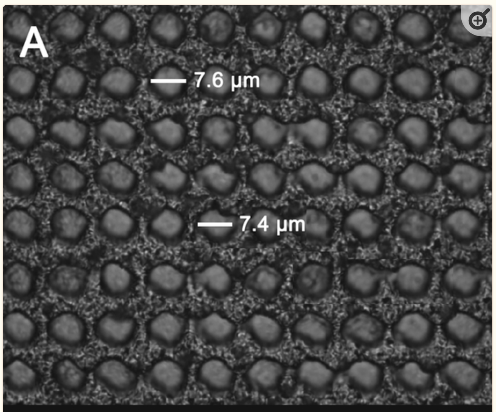
https://www.ncbi.nlm.nih.gov/pmc/articles/PMC7382025
What is TIMS-TOF-MSI？
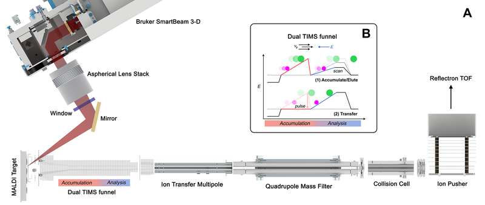
https://www.ncbi.nlm.nih.gov/pmc/articles/PMC7382025/
Advantages of timsTOF MSI
- High Sensitivity and Resolution:
- High spatial and mass resolution allows for detailed imaging of complex biological samples.
- Structural Insights:
- The combination of ion mobility and mass analysis provides information on ion conformation and interactions.
- Rich Chemical Information:
- Enables comprehensive profiling of lipids, metabolites, and proteins within tissues.
Current Limitations
Data size (30-100GB per slides)
Throughput is limited by workstation based software
Open source format doesn’t support ion mobility MSI data
Lack of biological interpretation
Workflow Overview
- The workflow involves several steps:
- Data Acquisition: Collecting mass spectral data from samples.
- Data Processing: Normalizing and analyzing the acquired data.
- Data Interpretation: Drawing conclusions from the results and creating visual representations of the data.
Workflow Overview
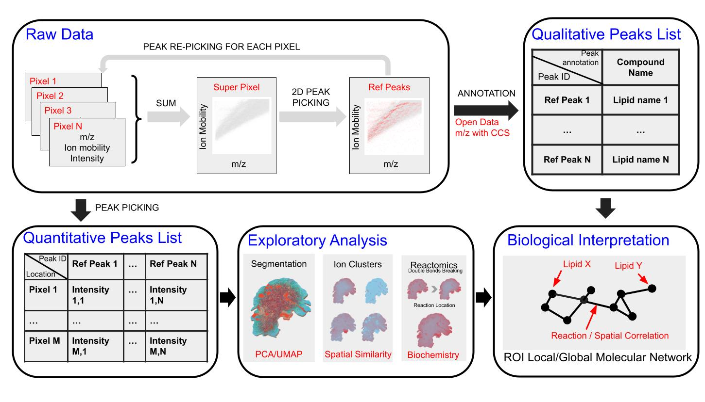
Raw Data Processing
Reference Peaks Extraction
- Combine peaks from all pixels into super pixels for reference peak picking.
- Load raw MSI data and extract frame information.
- Process data in batches to manage memory usage.
- Save reference peaks for later analyses.
Reference Peak Picking
Peak Picking Function
- Define functions using Rcpp for efficient peak picking in 2D space.
- Parameters include:
- mz_ppm: ppm tolerance for m/z values
- ccs_tolerance: tolerance for collision cross-section values
- snr: signal-to-noise ratio
- Perform the peak picking on super pixels and filter peaks based on intensity thresholds.
Reference Peak Picking
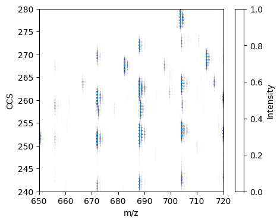
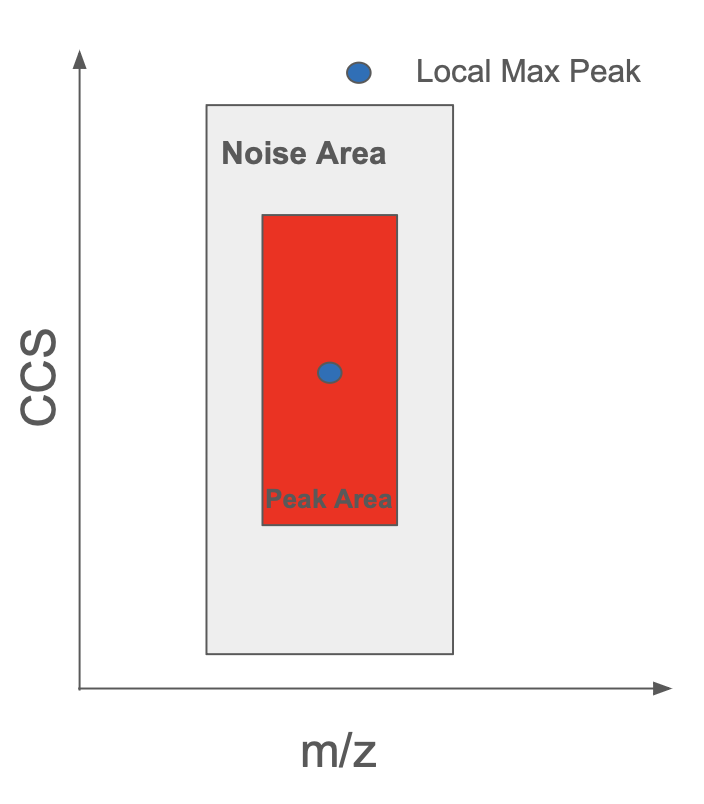
Quantitative & Qualitative Peaks List
Quantitative Analysis
Extract peak intensities across all pixels based on reference peaks.
Normalize intensities using TIC (Total Ion Count) for better comparisons.
Quantitative & Qualitative Peaks List
Qualitative Analysis
Annotation of peaks against existing databases for lipids and metabolites.
Matches based on m/z and CCS values for biological relevance.
rmwf::runmzccsanno()
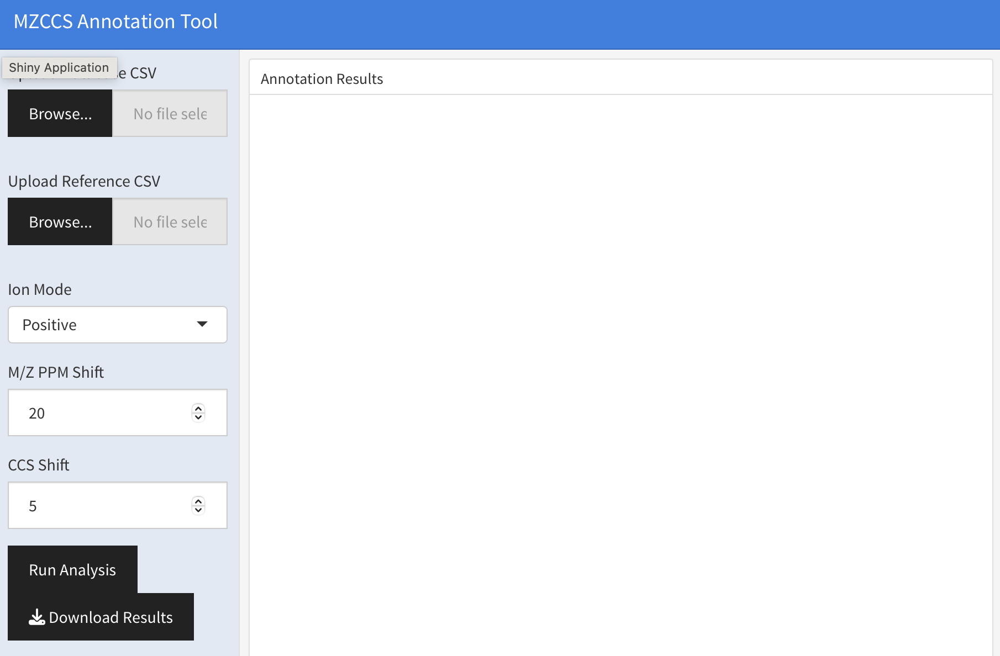
Exploratory Analysis
Peak Statistics
- Visualize peak number distributions across pixels using histograms and scatter plots.
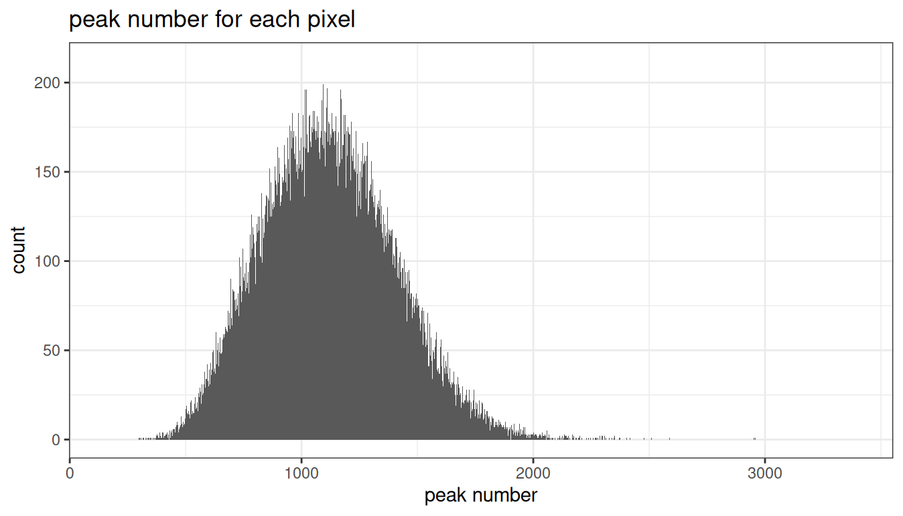
Exploratory Analysis
Visualization of Selected Ions
- Save and visualize ion images for specific selected ion.
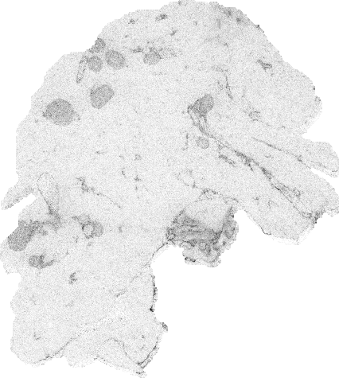
Segmentation
PCA and UMAP Segmentation
Use PCA and UMAP for data dimensionality reduction.
Perform clustering to identify regions of interest in MSI data.
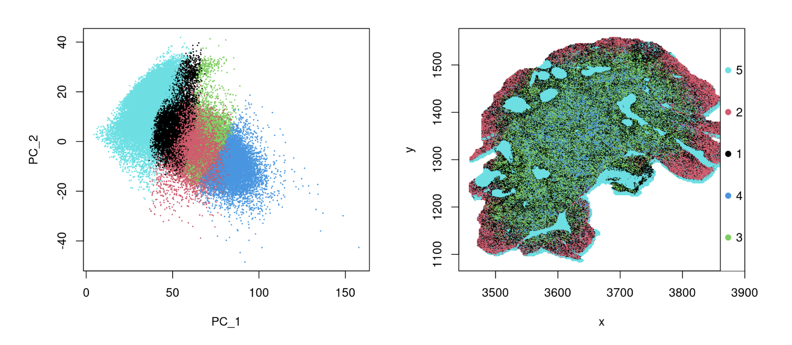
Ion Clustering
Cluster ions based on spatial distribution similarities.
Generate spatial maps for ion clusters to visualize their distribution.
Ions cluster can be used to identify ROI specific compounds
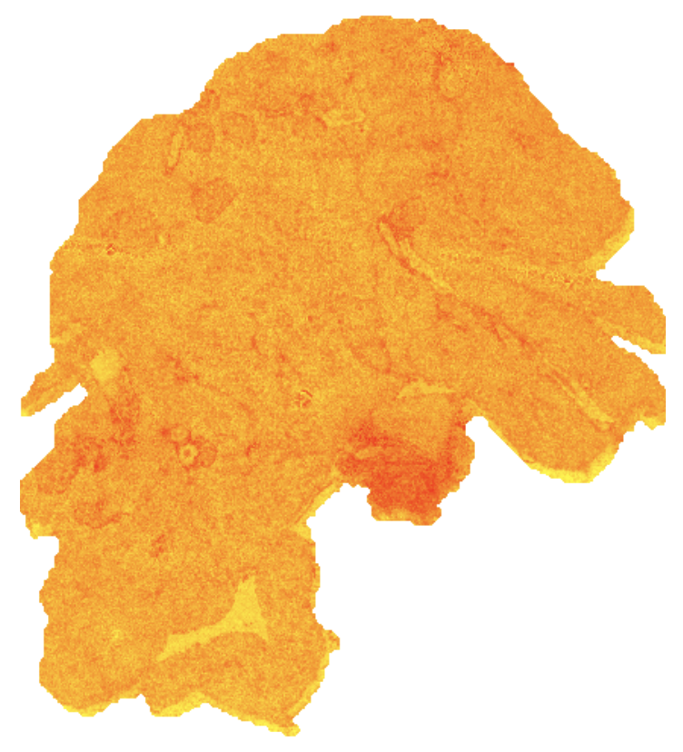
Reactomics Analysis
Reactomics refers to evaluate reaction relation among compounds.
Paired Mass Distances (PMDs) is calculated for reaction level assessments.
Linear regression analyzes changes in response to factors.
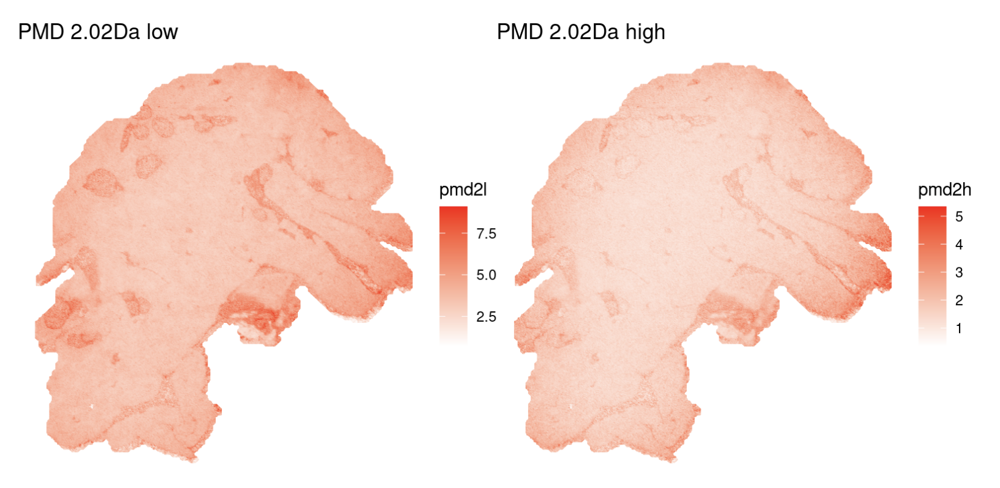
Molecular Network Analysis
Building and Visualizing Networks
Create molecular networks from annotated ion data.
- Nodes as compounds
- Edges as spatial/chemical relation
Visualize networks to illustrate relationships among chemical species.
Shiny application online rmwf::runmsinet()
Conclusion
timsTOF MSI is useful to access spatial/chemical changes within biological samples.
OSSpRe is developed to analysis timsTOF MSI data.
Can be coupled with other omics/imaging technique.